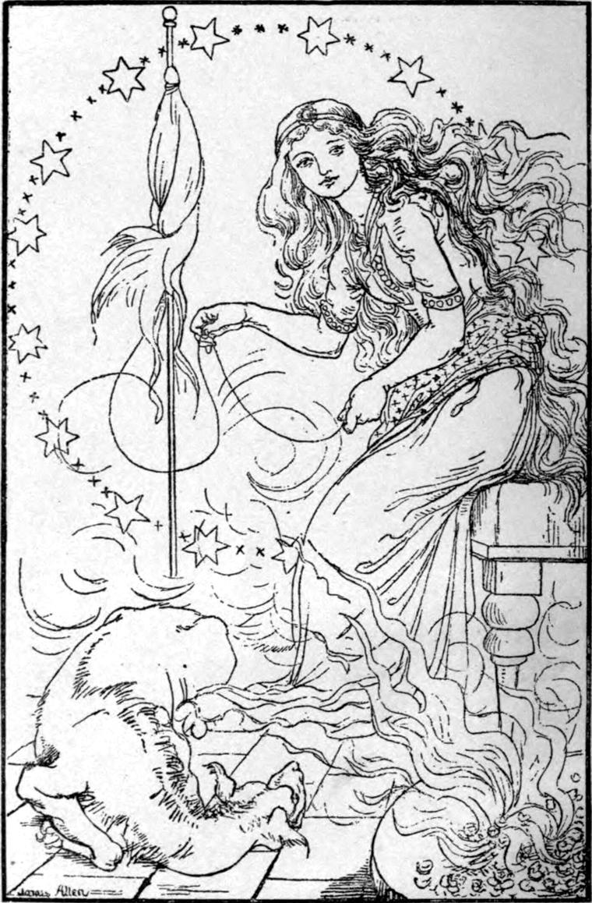

The next night Curdie went home from the mine a little earlier than usual, to make himself tidy before going to the dove tower. The princess had not appointed an exact time for him to be there; he would go as near the time he had gone first as he could. On his way to the bottom of the hill, he met his father coming up. The sun was then down, and the warm first of the twilight filled the evening. He came rather wearily up the hill: the road, he thought, must have grown steeper in parts since he was Curdie's age. His back was to the light of the sunset, which closed him all round in a beautiful setting, and Curdie thought what a grand-looking man his father was, even when he was tired. It is greed and laziness and selfishness, not hunger or weariness or cold, that take the dignity out of a man, and make him look mean.
'Ah, Curdie! There you are!' he said, seeing his son come bounding along as if it were morning with him and not evening.
'You look tired, Father,' said Curdie.
'Yes, my boy. I'm not so young as you.'
'Nor so old as the princess,' said Curdie.
'Tell me this,' said Peter, 'why do people talk about going downhill when they begin to get old? It seems to me that then first they begin to go uphill.'
'You looked to me, Father, when I caught sight of you, as if you had been climbing the hill all your life, and were soon to get to the top.'
'Nobody can tell when that will be,' returned Peter. 'We're so ready to think we're just at the top when it lies miles away. But I must not keep you, my boy, for you are wanted; and we shall be anxious to know what the princess says to you—that is, if she will allow you to tell us.'
'I think she will, for she knows there is nobody more to be trusted than my father and mother,' said Curdie, with pride.
And away he shot, and ran, and jumped, and seemed almost to fly down the long, winding, steep path, until he came to the gate of the king's house.
There he met an unexpected obstruction: in the open door stood the housekeeper, and she seemed to broaden herself out until she almost filled the doorway.
'So!' she said, 'it's you, is it, young man? You are the person that comes in and goes out when he pleases, and keeps running up and down my stairs without ever saying by your leave, or even wiping his shoes, and always leaves the door open! Don't you know this is my house?'
'No, I do not,' returned Curdie respectfully. 'You forget, ma'am, that it is the king's house.'
'That is all the same. The king left it to me to take care of—and that you shall know!'
'Is the king dead, ma'am, that he has left it to you?' asked Curdie, half in doubt from the self-assertion of the woman.
'Insolent fellow!' exclaimed the housekeeper. 'Don't you see by my dress that I am in the king's service?'
'And am I not one of his miners?'
'Ah! that goes for nothing. I am one of his household. You are an out-of-doors labourer. You are a nobody. You carry a pickaxe. I carry the keys at my girdle. See!'
'But you must not call one a nobody to whom the king has spoken,' said Curdie.
'Go along with you!' cried the housekeeper, and would have shut the door in his face, had she not been afraid that when she stepped back he would step in ere she could get it in motion, for it was very heavy and always seemed unwilling to shut. Curdie came a pace nearer. She lifted the great house key from her side, and threatened to strike him down with it, calling aloud on Mar and Whelk and Plout, the menservants under her, to come and help her. Ere one of them could answer, however, she gave a great shriek and turned and fled, leaving the door wide open.
Curdie looked behind him, and saw an animal whose gruesome oddity even he, who knew so many of the strange creatures, two of which were never the same, that used to live inside the mountain with their masters the goblins, had never seen equalled. Its eyes were flaming with anger, but it seemed to be at the housekeeper, for it came cowering and creeping up and laid its head on the ground at Curdie's feet. Curdie hardly waited to look at it, however, but ran into the house, eager to get up the stairs before any of the men should come to annoy—he had no fear of their preventing him. Without halt or hindrance, though the passages were nearly dark, he reached the door of the princess's workroom, and knocked.
'Come in,' said the voice of the princess.
Curdie opened the door—but, to his astonishment, saw no room there. Could he have opened a wrong door? There was the great sky, and the stars, and beneath he could see nothing only darkness! But what was that in the sky, straight in front of him? A great wheel of fire, turning and turning, and flashing out blue lights!
'Come in, Curdie,' said the voice again.

'I would at once, ma'am,' said Curdie, 'if I were sure I was standing at your door.'
'Why should you doubt it, Curdie?'
'Because I see neither walls nor floor, only darkness and the great sky.'
'That is all right, Curdie. Come in.'
Curdie stepped forward at once. He was indeed, for the very crumb of a moment, tempted to feel before him with his foot; but he saw that would be to distrust the princess, and a greater rudeness he could not offer her. So he stepped straight in—I will not say without a little tremble at the thought of finding no floor beneath his foot. But that which had need of the floor found it, and his foot was satisfied.
No sooner was he in than he saw that the great revolving wheel in the sky was the princess's spinning wheel, near the other end of the room, turning very fast. He could see no sky or stars any more, but the wheel was flashing out blue—oh, such lovely sky-blue light!—and behind it of course sat the princess, but whether an old woman as thin as a skeleton leaf, or a glorious lady as young as perfection, he could not tell for the turning and flashing of the wheel.
'Listen to the wheel,' said the voice which had already grown dear to Curdie: its very tone was precious like a jewel, not as a jewel, for no jewel could compare with it in preciousness.
And Curdie listened and listened.
'What is it saying?' asked the voice.
'It is singing,' answered Curdie.
'What is it singing?'
Curdie tried to make out, but thought he could not; for no sooner had he got hold of something than it vanished again.
Yet he listened, and listened, entranced with delight.
'Thank you, Curdie, said the voice.
'Ma'am,' said Curdie, 'I did try hard for a while, but I could not make anything of it.'
'Oh yes, you did, and you have been telling it to me! Shall I tell you again what I told my wheel, and my wheel told you, and you have just told me without knowing it?'
'Please, ma'am.'
Then the lady began to sing, and her wheel spun an accompaniment to her song, and the music of the wheel was like the music of an Aeolian harp blown upon by the wind that bloweth where it listeth. Oh, the sweet sounds of that spinning wheel! Now they were gold, now silver, now grass, now palm trees, now ancient cities, now rubies, now mountain brooks, now peacock's feathers, now clouds, now snowdrops, and now mid-sea islands. But for the voice that sang through it all, about that I have no words to tell. It would make you weep if I were able to tell you what that was like, it was so beautiful and true and lovely. But this is something like the words of its song:
And the clouds are the dust that flies,
And the suns are weaving them up
For the time when the sleepers shall rise.
And gems are turning to eyes,
And the trees are gathering souls
For the day when the sleepers shall rise.
And laughter to glean the sighs;
Burn and bury the care and guile,
For the day when the sleepers shall rise.
The larks and the glimmers and flows!
The lilies and sparrows and daily bread,
And the something that nobody knows!
The princess stopped, her wheel stopped, and she laughed. And her laugh was sweeter than song and wheel; sweeter than running brook and silver bell; sweeter than joy itself, for the heart of the laugh was love.
'Come now, Curdie, to this side of my wheel, and you will find me,' she said; and her laugh seemed sounding on still in the words, as if they were made of breath that had laughed.
Curdie obeyed, and passed the wheel, and there she stood to receive him!—fairer than when he saw her last, a little younger still, and dressed not in green and emeralds, but in pale blue, with a coronet of silver set with pearls, and slippers covered with opals that gleamed every colour of the rainbow. It was some time before Curdie could take his eyes from the marvel of her loveliness. Fearing at last that he was rude, he turned them away; and, behold, he was in a room that was for beauty marvellous! The lofty ceiling was all a golden vine, Whose great clusters of carbuncles, rubies, and chrysoberyls hung down like the bosses of groined arches, and in its centre hung the most glorious lamp that human eyes ever saw—the Silver Moon itself, a globe of silver, as it seemed, with a heart of light so wondrous potent that it rendered the mass translucent, and altogether radiant.
The room was so large that, looking back, he could scarcely see the end at which he entered; but the other was only a few yards from him—and there he saw another wonder: on a huge hearth a great fire was burning, and the fire was a huge heap of roses, and yet it was fire. The smell of the roses filled the air, and the heat of the flames of them glowed upon his face. He turned an inquiring look upon the lady, and saw that she was now seated in an ancient chair, the legs of which were crusted with gems, but the upper part like a nest of daisies and moss and green grass.
'Curdie,' she said in answer to his eyes, 'you have stood more than one trial already, and have stood them well: now I am going to put you to a harder. Do you think you are prepared for it?'
'How can I tell, ma'am,' he returned, 'seeing I do not know what it is, or what preparation it needs? Judge me yourself, ma'am.'
'It needs only trust and obedience,' answered the lady.
'I dare not say anything, ma'am. If you think me fit, command me.'
'It will hurt you terribly, Curdie, but that will be all; no real hurt but much good will come to you from it.'
Curdie made no answer but stood gazing with parted lips in the lady's face.
'Go and thrust both your hands into that fire,' she said quickly, almost hurriedly.
Curdie dared not stop to think. It was much too terrible to think about. He rushed to the fire, and thrust both of his hands right into the middle of the heap of flaming roses, and his arms halfway up to the elbows. And it did hurt! But he did not draw them back. He held the pain as if it were a thing that would kill him if he let it go—as indeed it would have done. He was in terrible fear lest it should conquer him.
But when it had risen to the pitch that he thought he could bear it no longer, it began to fall again, and went on growing less and less until by contrast with its former severity it had become rather pleasant. At last it ceased altogether, and Curdie thought his hands must be burned to cinders if not ashes, for he did not feel them at all. The princess told him to take them out and look at them. He did so, and found that all that was gone of them was the rough, hard skin; they were white and smooth like the princess's.
'Come to me,' she said.
He obeyed and saw, to his surprise, that her face looked as if she had been weeping.
'Oh, Princess! What is the matter?' he cried. 'Did I make a noise and vex you?'
'No, Curdie, she answered; 'but it was very bad.'
'Did you feel it too then?'
'Of course I did. But now it is over, and all is well. Would you like to know why I made You put your hands in the fire?' Curdie looked at them again—then said:
'To take the marks of the work off them and make them fit for the king's court, I suppose.'
'No, Curdie,' answered the princess, shaking her head, for she was not pleased with the answer. 'It would be a poor way of making your hands fit for the king's court to take off them signs of his service. There is a far greater difference on them than that. Do you feel none?'
'No, ma'am.'
'You will, though, by and by, when the time comes. But perhaps even then you might not know what had been given you, therefore I will tell you. Have you ever heard what some philosophers say—that men were all animals once?'
'No, ma'am.'
'It is of no consequence. But there is another thing that is of the greatest consequence—this: that all men, if they do not take care, go down the hill to the animals' country; that many men are actually, all their lives, going to be beasts. People knew it once, but it is long since they forgot it.'
'I am not surprised to hear it, ma'am, when I think of some of our miners.'
'Ah! But you must beware, Curdie, how you say of this man or that man that he is travelling beastward. There are not nearly so many going that way as at first sight you might think. When you met your father on the hill tonight, you stood and spoke together on the same spot; and although one of you was going up and the other coming down, at a little distance no one could have told which was bound in the one direction and which in the other. Just so two people may be at the same spot in manners and behaviour, and yet one may be getting better and the other worse, which is just the greatest of all differences that could possibly exist between them.'
'But ma'am,' said Curdie, 'where is the good of knowing that there is such a difference, if you can never know where it is?'
'Now, Curdie, you must mind exactly what words I use, because although the right words cannot do exactly what I want them to do, the wrong words will certainly do what I do not want them to do. I did not say you can never know. When there is a necessity for your knowing, when you have to do important business with this or that man, there is always a way of knowing enough to keep you from any great blunder. And as you will have important business to do by and by, and that with people of whom you yet know nothing, it will be necessary that you should have some better means than usual of learning the nature of them.
'Now listen. Since it is always what they do, whether in their minds or their bodies, that makes men go down to be less than men, that is, beasts, the change always comes first in their hands—and first of all in the inside hands, to which the outside ones are but as the gloves. They do not know it of course; for a beast does not know that he is a beast, and the nearer a man gets to being a beast the less he knows it. Neither can their best friends, or their worst enemies indeed, see any difference in their hands, for they see only the living gloves of them. But there are not a few who feel a vague something repulsive in the hand of a man who is growing a beast.
'Now here is what the rose-fire has done for you: it has made your hands so knowing and wise, it has brought your real hands so near the outside of your flesh gloves, that you will henceforth be able to know at once the hand of a man who is growing into a beast; nay, more—you will at once feel the foot of the beast he is growing, just as if there were no glove made like a man's hand between you and it.
'Hence of course it follows that you will be able often, and with further education in zoology, will be able always to tell, not only when a man is growing a beast, but what beast he is growing to, for you will know the foot—what it is and what beast's it is. According, then, to your knowledge of that beast will be your knowledge of the man you have to do with. Only there is one beautiful and awful thing about it, that if any one gifted with this perception once uses it for his own ends, it is taken from him, and then, not knowing that it is gone, he is in a far worse condition than before, for he trusts to what he has not got.'
'How dreadful!' Said Curdie. 'I must mind what I am about.'
'Yes, indeed, Curdie.'
'But may not one sometimes make a mistake without being able to help it?'
'Yes. But so long as he is not after his own ends, he will never make a serious mistake.'
'I suppose you want me, ma'am, to warn every one whose hand tells me that he is growing a beast—because, as you say, he does not know it himself.'
The princess smiled.
'Much good that would do, Curdie! I don't say there are no cases in which it would be of use, but they are very rare and peculiar cases, and if such come you will know them. To such a person there is in general no insult like the truth. He cannot endure it, not because he is growing a beast, but because he is ceasing to be a man. It is the dying man in him that it makes uncomfortable, and he trots, or creeps, or swims, or flutters out of its way—calls it a foolish feeling, a whim, an old wives' fable, a bit of priests' humbug, an effete superstition, and so on.'
'And is there no hope for him? Can nothing be done? It's so awful to think of going down, down, down like that!'
'Even when it's with his own will?'
'That's what seems to me to make it worst of all,' said Curdie.
'You are right,' answered the princess, nodding her head; 'but there is this amount of excuse to make for all such, remember—that they do not know what or how horrid their coming fate is. Many a lady, so delicate and nice that she can bear nothing coarser than the finest linen to touch her body, if she had a mirror that could show her the animal she is growing to, as it lies waiting within the fair skin and the fine linen and the silk and the jewels, would receive a shock that might possibly wake her up.'
'Why then, ma'am, shouldn't she have it?'
The princess held her peace.
'Come here, Lina,' she said after a long pause.
From somewhere behind Curdie, crept forward the same hideous animal which had fawned at his feet at the door, and which, without his knowing it, had followed him every step up the dove tower. She ran to the princess, and lay down flat at her feet, looking up at her with an expression so pitiful that in Curdie's heart it overcame all the ludicrousness of her horrible mass of incongruities. She had a very short body, and very long legs made like an elephant's, so that in lying down she kneeled with both pairs. Her tail, which dragged on the floor behind her, was twice as long and quite as thick as her body. Her head was something between that of a polar bear and a snake. Her eyes were dark green, with a yellow light in them. Her under teeth came up like a fringe of icicles, only very white, outside of her upper lip. Her throat looked as if the hair had been plucked off. It showed a skin white and smooth.
'Give Curdie a paw, Lina,' said the princess.
The creature rose, and, lifting a long foreleg, held up a great doglike paw to Curdie. He took it gently. But what a shudder, as of terrified delight, ran through him, when, instead of the paw of a dog, such as it seemed to his eyes, he clasped in his great mining fist the soft, neat little hand of a child! He took it in both of his, and held it as if he could not let it go. The green eyes stared at him with their yellow light, and the mouth was turned up toward him with its constant half grin; but here was the child's hand! If he could but pull the child out of the beast! His eyes sought the princess. She was watching him with evident satisfaction.
'Ma'am, here is a child's hand!' said Curdie.
'Your gift does more for you than it promised. It is yet better to perceive a hidden good than a hidden evil.'
'But,' began Curdie.
'I am not going to answer any more questions this evening,' interrupted the princess. 'You have not half got to the bottom of the answers I have already given you. That paw in your hand now might almost teach you the whole science of natural history—the heavenly sort, I mean.'
'I will think,' said Curdie. 'But oh! please! one word more: may I tell my father and mother all about it?'
'Certainly—though perhaps now it may be their turn to find it a little difficult to believe that things went just as you must tell them.'
'They shall see that I believe it all this time,' said Curdie.
'Tell them that tomorrow morning you must set out for the court—not like a great man, but just as poor as you are. They had better not speak about it. Tell them also that it will be a long time before they hear of you again, but they must not lose heart. And tell your father to lay that stone I gave him at night in a safe place—not because of the greatness of its price, although it is such an emerald as no prince has in his crown, but because it will be a news-bearer between you and him. As often as he gets at all anxious about you, he must take it and lay it in the fire, and leave it there when he goes to bed. In the morning he must find it in the ashes, and if it be as green as ever, then all goes well with you; if it have lost colour, things go ill with you; but if it be very pale indeed, then you are in great danger, and he must come to me.'
'Yes, ma'am,' said Curdie. 'Please, am I to go now?'
'Yes,' answered the princess, and held out her hand to him.
Curdie took it, trembling with joy. It was a very beautiful hand—not small, very smooth, but not very soft—and just the same to his fire-taught touch that it was to his eyes. He would have stood there all night holding it if she had not gently withdrawn it.
'I will provide you a servant,' she said, 'for your journey and to wait upon you afterward.'
'But where am I to go, ma'am, and what am I to do? You have given me no message to carry, neither have you said what I am wanted for. I go without a notion whether I am to walk this way or that, or what I am to do when I get I don't know where.'
'Curdie!' said the princess, and there was a tone of reminder in his own name as she spoke it, 'did I not tell you to tell your father and mother that you were to set out for the court? And you know that lies to the north. You must learn to use far less direct directions than that. You must not be like a dull servant that needs to be told again and again before he will understand. You have orders enough to start with, and you will find, as you go on, and as you need to know, what you have to do. But I warn you that perhaps it will not look the least like what you may have been fancying I should require of you. I have one idea of you and your work, and you have another. I do not blame you for that—you cannot help it yet; but you must be ready to let my idea, which sets you working, set your idea right. Be true and honest and fearless, and all shall go well with you and your work, and all with whom your work lies, and so with your parents—and me too, Curdie,' she added after a little pause.
The young miner bowed his head low, patted the strange head that lay at the princess's feet, and turned away. As soon as he passed the spinning wheel, which looked, in the midst of the glorious room, just like any wheel you might find in a country cottage—old and worn and dingy and dusty—the splendour of the place vanished, and he saw but the big bare room he seemed at first to have entered, with the moon—the princess's moon no doubt—shining in at one of the windows upon the spinning wheel.